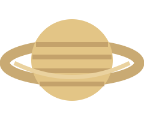

Планета с кольцами
Сатурн — шестая планета от Солнца. Его широкая система колец состоит из множества частиц льда и камня. Сатурн, как и Юпитер, является газовым гигантом.
Интересный факт: плотность Сатурна меньше плотности воды.

Сатурн — шестая планета от Солнца. Его широкая система колец состоит из множества частиц льда и камня. Сатурн, как и Юпитер, является газовым гигантом.
Интересный факт: плотность Сатурна меньше плотности воды.